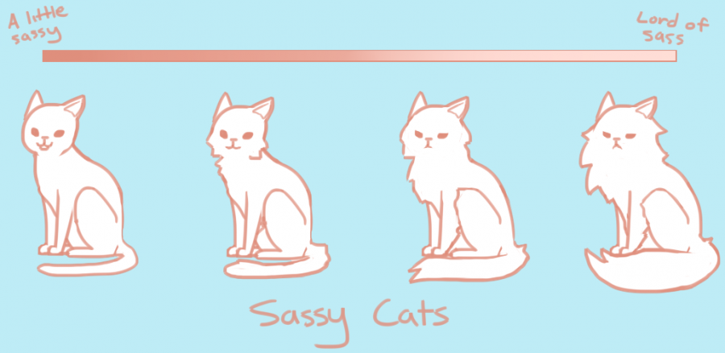

Hands On
 https://github.com/cwattrus/navbar_css_example
https://github.com/cwattrus/navbar_css_example
SASS
I mean Sass
No... dammit ... Sass
Sass because
 Image from http://awutcomic.com/art/core/sassy-cats.pngCSS with
Superpowers
Sass is the most mature, stable, and powerful professional grade CSS extension language in the world.
- according to themNo, really...
Superpowers
CSS on its own can be fun, but stylesheets are getting larger, more complex, and harder to maintain. This is where a preprocessor can help. Use variables, nesting, mixins, inheritance and others in your CSS.
So What Makes Sass So Super?
NESTING!!!
Image from http://www.geekalerts.com/u/matryoshka-nesting-robots.jpgVariables
Use $ to set and use variables
Mixins
Create reusable snippets of CSS that can take arguments.
Great for browser prefixes
@mixin border-radius($radius) {
-webkit-border-radius: $radius;
-moz-border-radius: $radius;
-ms-border-radius: $radius;
-o-border-radius: $radius;
border-radius: $radius;
}
Common Sense
Use with caution or not at all
- Partials
- Operators
- Extends / Inheritance
Inheritance / Extend
Possible use cases
How to Cause The End
Just use a logic in your Sass
Ok maybe you'll be fine
But still...
Compass
If you need browser prefixes and a bunch of other useful stuff.
LESS vs Sass
Sass is better for many reasons. That doesn't mean that LESS sucks!
Or that for your use case you shouldn't rather use LESS
http://css-tricks.com/sass-vs-less/Helping with CSS3
Sass allows you to use Compass. Compass makes CSS3 easy.
Language Ability: Logic / Loops
LESS has this with their "guarded mixins" however it is not as fully featured as Sass. This is why Compass is better than most of the LESS libraries.
Community
Apparently the community around Sass is more active
Websites
Since this matters. LESS has a better website.
Other things
Variables, Media Queries, Math... blah blah
Read the docs, articles and arguments